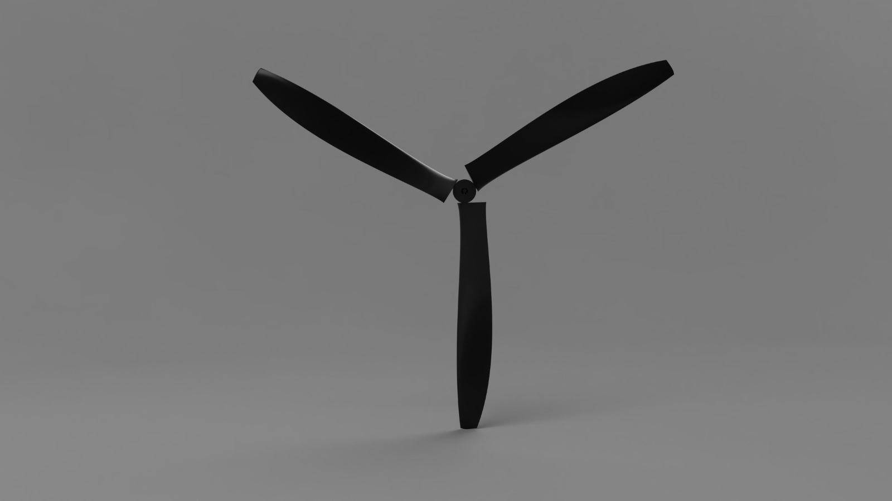
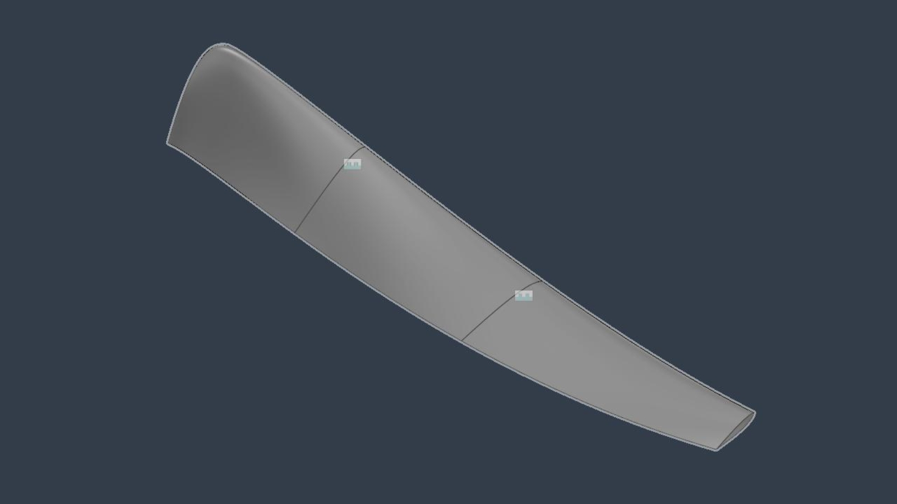
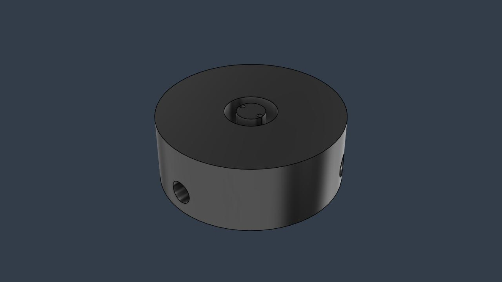
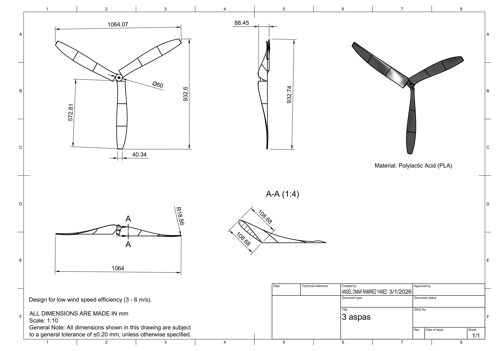
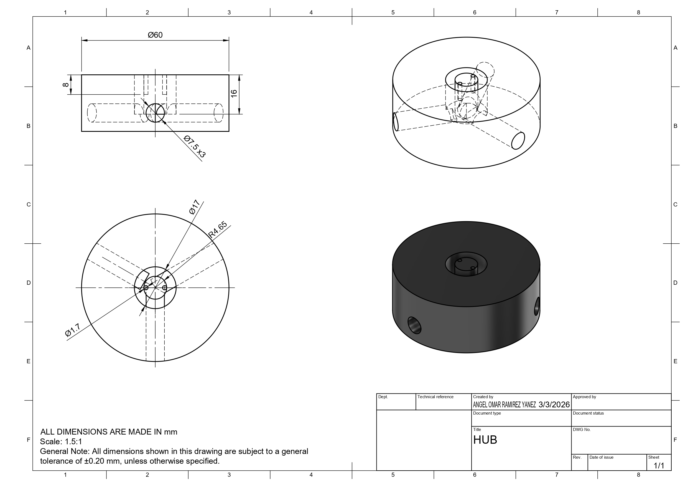
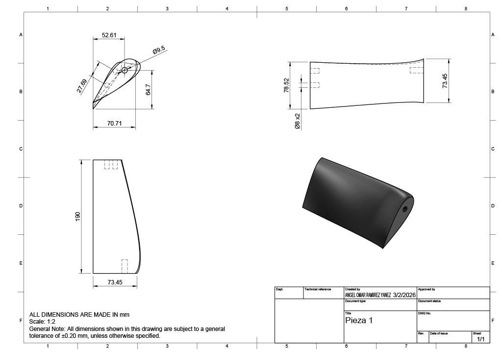
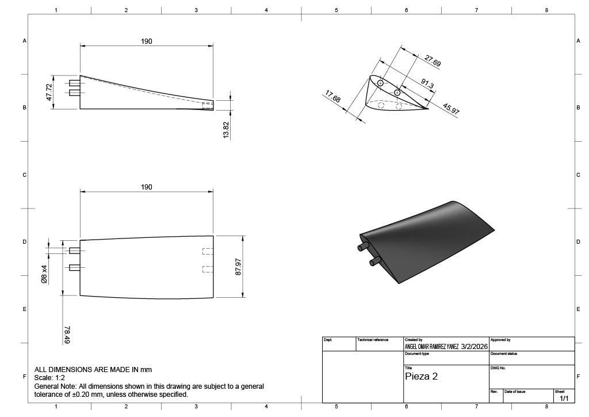
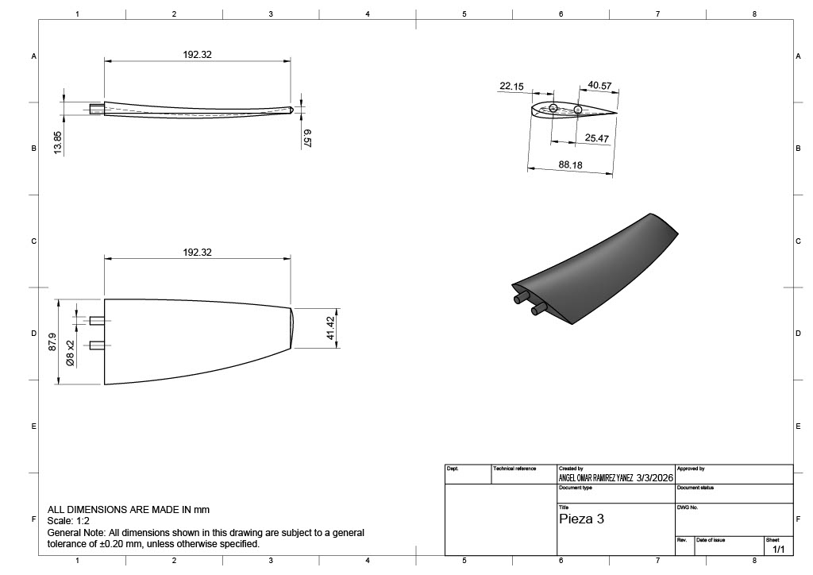
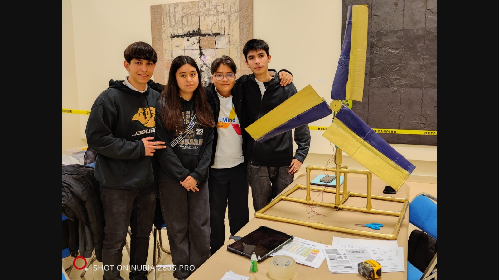
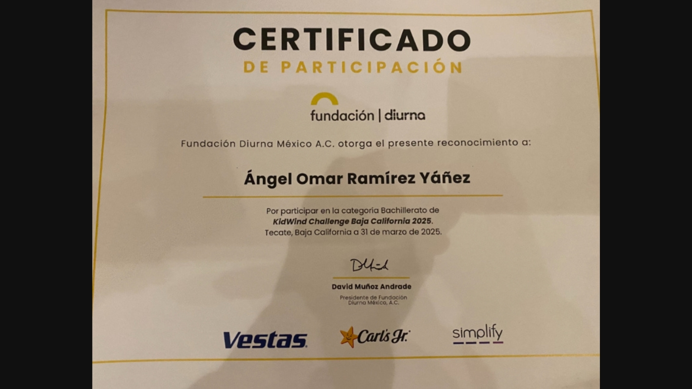

KidWind Challenge: Turbina Eólica
Optimización aerodinámica y sistemas de transmisión de potencia para máxima eficiencia energética.
01.
Diseño y Modelado CAD (Fusion 360)
El diseño se centró en la modularidad. El aspa fue seccionada en tres partes para facilitar la experimentación con diferentes perfiles alares.

Ensamble final

Geometría del aspa

Hub central
02.
Planos Técnicos y Despiece

Vista General
Hub Central
Sección A: Base
Sección B: Cuerpo
Sección C: Punta03.
Manufactura Aditiva y Transmisión
Utilicé impresión 3D para materializar los componentes. Un punto crítico fue el sistema de engranajes, diseñado para optimizar la relación de rotación entre las aspas y el generador DC.
- Material: PLA+ de alta resistencia
- Infill: 40% (Giroscopio)
- Relación: 3:1 para torque máximo
Proceso de impresión 3D de componentes críticos.
04.
Desempeño y Validación
Prueba de funcionamiento en túnel de viento durante KidWind 2025.
05.
Certificación y Equipo

